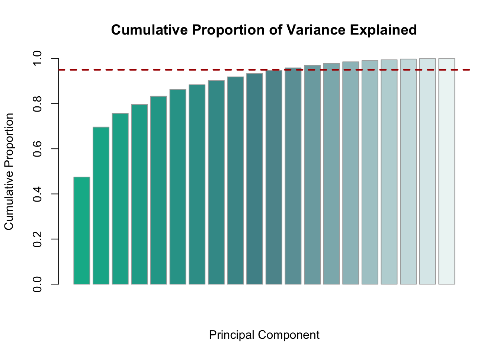

In this quarto document, we combine some ideas we discussed in class about amino acid properties, and how to construct a function that can compute values of amino acid similarity that we can use to evaluate the structure of a genetic code.
1 Initializations.
We first check the existence of required files, and whether your course directory is “in a sane state”. That goes on under the hood of the first code chunk - you can inspect in in the qmd source, but it is hidden in the HTML document.
2 Preparing the data
First, we read the sheets we need from the downloaded, published excel files that were distributed with AAontology paper (Breimann et al., 2024). These are the Supplementary Tables 1 and 3.
I often use names like “mySomething” as variable names, to avoid conflicts with existing names or reserved words in the language:
myScales <- readxl::read_excel("dat/Breimann_2024_Supplementary_Table_1.xlsx",sheet ="Normalized") myCats <- readxl::read_excel("dat/Breimann_2024_Supplementary_Table_3.xlsx",sheet ="Scales")# These are returned as "tibbles", we simplify them to data frames myScales <-as.data.frame(myScales) myCats <-as.data.frame(myCats)# The first column of myScales contains amino acid labels. We assign # these to rownames, and then remove that column:rownames(myScales) <- myScales[ , 1] myScales[ , 1] <-NULL# Always examine the result and check for sanity myScales[1:5,1:7]
ANDN920101 ARGP820101 ARGP820102 ARGP820103 BEGF750101 BEGF750102 BEGF750103
A 0.494 0.230 0.355 0.504 1.000 0.512 0.000
C 0.864 0.404 0.579 0.387 0.000 0.233 0.783
D 1.000 0.174 0.000 0.000 0.404 0.233 1.000
E 0.420 0.177 0.019 0.032 0.713 0.000 0.267
F 0.877 0.762 0.601 0.670 0.574 1.000 0.267
str(myCats)
'data.frame': 586 obs. of 5 variables:
$ scale_id : chr "LINS030110" "LINS030113" "JANJ780101" "JANJ780103" ...
$ category : chr "ASA/Volume" "ASA/Volume" "ASA/Volume" "ASA/Volume" ...
$ subcategory : chr "Accessible surface area (ASA)" "Accessible surface area (ASA)" "Accessible surface area (ASA)" "Accessible surface area (ASA)" ...
$ scale_name : chr "ASA (folded coil/turn)" "ASA (folded coil/turn)" "ASA (folded protein)" "ASA (folded protein)" ...
$ scale_description: chr "Total median accessible surfaces of whole residues in random coil/turn structures, expressed in Ų (Lins et al., 2003)" "% total accessible surfaces of whole residues in random coil/turn structures (Lins et al., 2003)" "Average accessible surface area (Janin et al., 1978)" "Percentage of exposed residues (Janin et al., 1978)" ...
Confirm that the IDs in both tables are the same. This kind of validation is important. Here we use the function setequal() since we don’t assume that the order matches, only the IDs themselves.
setequal(colnames(myScales), myCats$scale_id) # must be TRUE
[1] TRUE
any(duplicated(myCats$scale_id)) # must be FALSE
[1] FALSE
Define a vector of amino acid labels explicitly. This is the standard ordering of amino acids in this code. Using this variable guarantees that we don’t accidentally mix up ordering. (For example the order in the AAindex is not the same as in aaOntology…)
The raw data in the observations has widely different scales, which depend on the experimenters’ choice of experimental datails. However, the dimensionality reduction method that we will use later (PCA) is sensitive to the variance of the data: it would give observations that use a numerically larger scale more weight than those that use a samller scale. We will compensate for that by re-scaling each data set to a mean of 0 and a standard deviation of 1, with the R commans scale().
x <- myScales # make a temporary copy for validationfor (i inseq_len(ncol(myScales))) { myScales[ , i] <-scale(myScales[ , i]) }# Validate idx <-63# Pick a random datasetmean(myScales[ , idx]) # Must be (nearly) zero
[1] -4.440892e-17
sd(myScales[ , idx]) # Must be (nearly) one
[1] 1
# Clean uprm(x)
3 A table of Amino Acid scale types and values
We build a skeleton data structure that can contain both the categories and subcategories in myCats, as well as the actual values for the 20 amino acids from myScales. There are ways to merge such tables with a single expression in R, based on the shared scale IDs. However, here we do this explicitly, rather than inheriting the structure of the incoming data. We build from intent! This ensures we control the column names and their order, we know exactly what item goes where, and we can be sure that all assumptions we have about the resulting data are met.
aaOntology <-data.frame(scaleID = myCats$scale_id,category = myCats$category,subcategory = myCats$subcategory,scaleName = myCats$scale_name,scaleDescription = myCats$scale_description)rownames(aaOntology) <- aaOntology$scaleID # this gives us a convenient# way to access each row by# its ID. # Add amino acid columns, initialized to NAfor (aa in aaLabels) { aaOntology[ , aa] <-NA }
Next, we fill in the values scale by scale. We select them by the scaleID, not by row position. This makes the code robust to reordering. Use this as a general principle: match by semantics (meaning, content), not by structure (row index, relative position).
# This takes the rows for each ID, and puts the values in the right # columns for the ID in the joint tablefor (sID in aaOntology$scaleID) { aaOntology[sID, aaLabels] <- myScales[ aaLabels , sID] }
Note: it is now easy to pass the twenty or so lines of code to an AI, as part of a specification, and give it an exact description of the structure of our data.
Final sanity check
# Pick one random scale ID ... (testID <-sample(aaOntology$scaleID, 1))
[1] "QIAN880123"
# Print the reconstructed row (AA values only)cat("\nReconstructed values for scale", testID, ":\n")
Reconstructed values for scale QIAN880123 :
aaOntology[testID, aaLabels]
A C D E F G
QIAN880123 -1.304055 0.9191849 -0.3664457 -0.6776174 -0.09212321 0.7267498
H I K L M N
QIAN880123 0.763599 0.2558978 -0.8741469 -0.05527393 -0.4073893 0.6080132
P Q R S T V
QIAN880123 -1.459641 -1.848606 -0.09212321 1.46783 2.245759 0.6489568
W Y
QIAN880123 -0.4442386 -0.01433028
# Print the original column from myScalescat("\nOriginal values from myScales:\n")
# Confirm equality (the identical() functionis VERY strict,# TRUE means success)identical(as.numeric(aaOntology[testID, aaLabels]), myScales[[testID]] )
[1] FALSE
3.1 Selecting categories of amino acid scales
To select only a subset of subcategorites, we prepare a data frame of subcategory IDs and 0 / 1 selectors. 0 will mean: don’t use that subcategory. We want to do this explicitly, so we have a record of our choices. Therefore, we ask the code to write code for us, which we can then edit interactively and select by hand. This is a reproducible way to scaffold manual decisions: generate template code programmatically, then curate it by hand.
Remove duplicates: we only need each unique subcategory listed once. The ! duplicated() idiom is very useful to keep only unique values. This keeps only the first occurrence of each - which is fine, for this purpose they are all equivalent.
mySubCats <- mySubCats[!duplicated(mySubCats$subcat), ] (nrow(mySubCats)) # The number of unique subcategories in the dataset
[1] 74
The following code can be used to write code … the repeated lines of assignments were created this way. Once it was run, I copied the result, pasted it into this script (below) and used it to select categories for inclusion.
for (i in1:nrow(mySubCats)) {cat(sprintf("mySubCats$use[%d] <- 0 # %s : %s\n", i, mySubCats$cat[i], mySubCats$subcat[i])) }
Why do we need to select? Why can’t we just use all categories?
We want to use the result to compute “amino acid similarity” in order to evaluate the structure of the genetic code. Therefore we need to exclude all scales that are in some way influenced by the genetic code structure itself, rather than the inherent properties of the amino acid itself. If we are not careful about this point, we easily fall into a trap of circular reasoning.
In particular, things like codon counts, exchange probabilities, propensities to be observed in specific structural context in existin proteins, or categories that are not well defined or unclassified should be excluded.
The following section is deliberately long and explicit: it’s our record of assumptions. This ensures future readers (including ourselves) know exactly what we excluded, and how we interpreted our rationale above.
Finally, we define a selection vector that selects only the subcategories we want in the aaOntology table.
sel <-logical(nrow(aaOntology))for (i inseq_len(nrow(aaOntology))) { idx <-which(mySubCats$subcat == aaOntology$subcategory[i]) # which() sel[i] <- (mySubCats$use[idx] ==1) # This is a bit of idiomatic R style:# wrapping the expression in# parentheses returns the result,# which can then be assigned. Here, the# result is either TRUE or FALSE }
The above selection could be written both more “pedestrian”, by running a loop that checks every single row, or more idiomatic, with this single expression:
sel <- aaOntology$subcategory %in% mySubCats$subcat[mySubCats$use ==1]
… which coding style is preferred? Prefer the version that is most explicit for YOU.
4 Principal Component Analysis (PCA)
PCA extracts the uncorrelated dimensions (principal components, PCs) along which the categories of observations in a large data set vary most strongly.
In our context:
Observations = the 20 amino acids - as categories
Variables = the selected scales (hundreds of them)
PCA gives us a reduced-dimensional “feature space” for amino acids:
Each axis (principal component, PC) is orthogonal and ordered by how much variance it explains.
Each amino acid is projected into this space as a point with new coordinates (its “scores”).
Each original scale contributes to these PCs with a weight (the “loadings”), which we can use for interpretation.
The coordinates of the amino acids allow us to compute distances between them - this becomes a computed “similarity”.
Comparing the axes with the original data-sets allows us to interpret them as e.g. hydrophobicity, polarity, size, etc.
4.1 Computing the PCA
Computing PCAs in R can be done with a single command. We apply it to the selected rows. Remember that the data columns of each amino acid are named according to the aaLabels…
aaPCA <-prcomp(t(aaOntology[sel, aaLabels]), scale. =FALSE)# confirm the correct dimensions of aaPCA$x: should be 20 x 20dim(aaPCA$x)
[1] 20 20
Note: Normally we would scale each variable to unit variance, (PCA is sensitive to the magnitude of its input data), but here we already scale()’d the raw inputs, so we don’t scale them again. The parameter scale. = TRUE of prcomp() is set to TRUE by default, once again: be wary of hidden behaviour. For example, in the case that some of your data is meaningfully more “important” you might actually want its variance to be larger and not to scale implicitly.
4.2 Selecting “important” components
We get as many dimensions as the number of categories in the contributing data-sets, but the dimensions are (a) orthogonal, i.e. un-correlated, and (b) ordered by importance, i.e. by the amount of “variance” in the original data that each of them explains.
We can now keep only the most important ones, and discard all others. “Most important” could mean, those that together explain 95% of the variance in the data.
myColorGradient <-colorRampPalette(c("#02b597", "#549097", "#edf5f5"))(20) cumulativeProportions <-cumsum(aaPCA$sdev^2) /sum(aaPCA$sdev^2)barplot(cumulativeProportions,main="Cumulative Proportion of Variance Explained",xlab="Principal Component",ylab="Cumulative Proportion",ylim=c(0, 1),border="#AAAAAA",col=myColorGradient) myCutoff <-0.95# we define a cutoff for "most important"abline(h=myCutoff, col="#AA0000", lwd=2, lty=2) # mark importance threshold

# How many PCs to retain? (first PC where we pass 95% of variance) numPCsToRetain <-which(cumulativeProportions >= myCutoff)[1]cat(sprintf("Retaining %i principal components (%3.0f%% cutoff ).\n", numPCsToRetain, myCutoff *100))
Retaining 12 principal components ( 95% cutoff ).
4.3 Constructing a Feature Space
Simply use only columns 1:numPCsToRetain and assign that to the variable name we want:
aaFeatureSpace <- aaPCA$x[ , 1:numPCsToRetain]
5 Relationships between amino acids
A natural way to explore such relationships is a “heatmap”. Here we compute a heatmap from the distances (note: smaller distances mean greater similarity). Above we have defined a feature space. If we measure Euclidean distances of all pairs of positions of amino acids in that space, we get an overview of all similarities between amino acids. A heatmap is a commmon way to visualize that: bright spots mean amino acids are far apart, dark spots mean they’re close, and block structures identify groups. Notice how biochemically similar residues cluster together - that is a signal that our abstract space lines up with biology.
Figure: Heatmap of amino acid distances in Feature Space. Pink colours are closer distance. The dendrograms show the rleationships through hierarchical clustering. This clustering controls the order of rows and columns, which results in the visible block-structure that makes inherent groupings visible.
5.1 Summarize and Save
In summary our “Feature Space” for amino acids:
… takes all of the original data into account, each scale according to its contribution to the variance;
… recognizes that with 20 categories of observations (the 20 amino acids), there are only 19 independent dimensions of variance;
… defines those independent dimensions along which the contributions are orthogonal, i.e. uncorrelated;
… selects from those only the most “important” ones, i.e. those that jointly explain most of the variance;
… contains each amino acid as a unique “point”, its position given by its coordinates - which are the values along the dimensions of the feature space.
Save the feature space for re-use using saveRDS() … (see below)
myFN <-"dat/aaFeatureSpace.2025.Rds"if (!file.exists(myFN)) {saveRDS(aaFeatureSpace, file = myFN) }# If we wish to reload later:# aaFeatureSpace <- readRDS("dat/aaFeatureSpace.2025.Rds")
Note: The pair saveRDS() / readRDS() save and recreate single compressed R objects. You can assign the “value” of readRDS() to a new variable, if you want, or to the same variable name you used when creating the object.
In contrast the pair save() / load(), restores an R object to its original name. This might silently overwrite an object that currently exists in your workspace.
6 MILESTONE: Amino Acid Feature Space
At this point:
we have taken a large set of biophysical and statistical observations of amino acids;
we have scaled them to be numerically comparable among each other;
we have selected categories of observations that we believe are independent of the genetic code itself, and thus can be used to evaluate the genetic code;
we have used PCA to remove any sampling bias and correlations between the various sets of observations;
we have constructed a “feature space” constructed from the most important “Principal Components” of the dataset, which represents the whole information contained in the original observations.
we have defined the position of each amino acid in this space.
Next, we need to consider what these numbers all mean.
7 Interpreting the Principal Components
Each of the original scales contributed a little to every dimension of our feature space - but this does not mean that the feature space is now a purely abstract mathematical artefact. We can interpret the dimensions by comparing them back to the original scales.
7.1 Corelations between PCs and observed scales
For example, let’s take the third-most important PC, the third column in our aaFeatureSpace matrix, and calculate a coefficient of correlation with each of the original scales. I write this as a completely “pedestrian” for-loop. Why?
In R, the cor() function is “vectorised” and can take whole matrices at once. That can look elegant, but it relies on a set of implicit assumptions: - Are rows or columns the “observations”? - What happens if one argument is a vector, and the other is a matrix? - Will cor() silently drop dimensions or recycle values?
For an expert user, those details can be managed. But for learners, “implicit” almost always means “unexpected”. A one-liner with cor() might be concise, but it is also brittle: change the orientation of a table, and suddenly you get “incompatible dimensions” errors - or worse: plausible numbers that are wrong, but hard to spot.
By contrast, the explicit loop below states exactly what we intend: “For each scale (row), compute its correlation with this PC.”
This may be more pedestrian, but it is:
Readable: the intent is obvious.
Robust: no hidden conventions about rows vs. columns.
Fast enough: looping over a few hundred scales × 20 amino acids is trivial for R.
For teaching, the clarity of intent matters more than saving one line of code. In fact, this is a good example of the broader principle: in data analysis, explicit beats implicit, especially when code is read by humans (or AIs) who need to understand the logic, not just the result.
We want the scores of amino acids along some Principal Component. But: row order can sometimes change (e.g. one-letter and three-letter codes are sorted differently) and all of a sudden, without noticing, you are comparing values for Ala - A (Apples) with Arg - R (oRanges), which is the kind of silent error that is as awful in its consequences as it is hard to spot.
By indexing with the order defined in aaLabels, we guarantee the rows to be in the same order as our amino acid labels. (Mind you, they are already sorted that way, because this is how we constructed them. But that is something we only know, not something we can see at this point in the code.)
thisPC <- aaFeatureSpace[aaLabels, 3] # define which PC to use myCors <-numeric(nrow(aaOntology)) # a vector to store the resultsnames(myCors) <- aaOntology$scaleID # named, to keep IDs with resultsfor (i inseq_along(myCors)) { # iterate over each row# cor() the PC with the aaLabel-ordered values, coerced into a vector myCors[i] <-cor(thisPC, as.numeric(aaOntology[i, aaLabels])) }# Print out the 10 most positive and most negative correlations (topPos <-head(sort(myCors, decreasing =TRUE ), 10)) # strongest positive
We can also plot two dimensions of the feature space as a scatterplot, with one-letter codes. This is a great way to get an intuitive sense of the similarity. These are just the two first principal components, but jointly they already explain about 70% of the variance.
But looking at this plot, we have to ask ourselves - what do these principal components actually mean? Is this just a mathematical trick, or does this connect to the “real world”? To examine that, we need to take a more global view of the original scales, and their relationship to the PCs we use.
7.3 Global Interpretation of Axes and Scales
7.3.1 Interpreting in 2D
The original 586 scales for 20 amino acids occupy a 20-dimensional subspace of a 586-dimensional space. But even after using PCA, the resulting space is too high-dimensional to properly visualize. This is a common problem for data science and one of the most popular solutions was contributed in 2008 by UofT’s Geoffrey Hinton, with Laurens van der Maaten (PDF): this is “t-Stochastic Neighbour Embedding”, or t-SNE. This is an excellent dimensionality reduction algorithm that works by embedding in a low dimensional space while preserving neighborhood relations. Essentially, this is a projection that is not based on algebra, but on semantics, the meaning and significance of the data. The only drawback was its O(N2) time complexity, that made computational requirements very significant for large datasets. However, van der Maaten published an improvement in 2014 (PDF) which used a tree-based algorithm to achieve an O( N log N ) complexity, which is practical even for “large” datasets. This is the version that is implemented in R.
Below, I am showcasing how to prepare our data and run it through tSNE. It’s actually quite simple. We prepare a joint matrix of scales and feature Space PCs, run that through t-SNE, and plot the results. The difficulties are only in the details of data preparation and plotting:
We need to ensure none of our points overlap exactly;
We need to keep the names and definitions attached to the data, so we can interpret the plot;
We need to color code the points to identify and distinguish scales and PCs;
We would like some interactivity - the ability to zoom into the plot, or get detailed information;
…
… in short, all those things that allow us to tell a story with our data. And that is what data science is really about.
7.3.2 Joint t-SNE embedding of scales + PCs (2D)
7.3.2.1 First step: Organising our Data
We define a lookup table for clear naming of PCs. PCs don’t come with globally unique IDs, some of the AA ontology scales are also called “PC1”, “PC2” etc. so we namespace them: we add a prefix that makes sure we won’t have any collision between names. The lookup table allows us to switch between our “private” names, and the names we used in the aaFeatureSpace table, as needed.
pcLookup <-data.frame(myID =paste0("my.", colnames(aaFeatureSpace)), # e.g. "my.PC1"pcID =colnames(aaFeatureSpace) # e.g. "PC1")
Scales already have unique and meaningful IDs, so we leave them as-is.
However, some scales have duplicated values. That will cause a problem later, because the t-SNE embedding method will not work if points with a distance of zero are present in the dataset. Let’s quickly build a vector of scale-IDs whose values (i.e positions in the 20- dimensional space) are unique: myScID:
# identify duplicated rownamesisDup <-duplicated(aaOntology[, aaLabels]) # a vector of TRUE and FALSE# Check which scales these are:rownames(aaOntology)[isDup]
# define IDs of unique scalesmyScID <-rownames(aaOntology)[! isDup]# ... as well, for symmetry of reference:myPcID <- pcLookup$myID
These two vectors define our scales and PCs, each as a vector of rownames in the respective matrices that store the originals. Referencing them thrrough names rather than row numbers guarantees we will always use the correct rows (or columns) in exactly the right order. Errors about row numbers are notoriously hard to identify and may lead to subtly wrong results. Using names as labels of the contents is the safer way.
# Define the joint matrix of scales and PCsjointMat <-rbind( aaOntology[ myScID, aaLabels], # rows: scales, cols: amino acidst(aaFeatureSpace[aaLabels, pcLookup$pcID]) # rows: PCs, cols: amino acids)# Row names: preserve scale IDs, add namespaced PC IDsrownames(jointMat) <-c(myScID, myPcID)# Define hover text for scales: include ID, name, and descriptionscaleHover <-paste0("Scale: ", aaOntology[myScID, "scaleID"], "<br>","Name: ", aaOntology[myScID, "scaleName"], "<br>","Description: ", aaOntology[myScID, "scaleDescription"])# Add hover text for PCs: minimal but interpretablepcHover <-paste0("Feature-space axis ", pcLookup$pcID," (", pcLookup$myID, ")")# Combine into a single vector aligned with the jointMat rowshoverText <-c(scaleHover, pcHover)names(hoverText) <-rownames(jointMat)# Final sanity checks stopifnot(ncol(jointMat) ==length(aaLabels)) # 20 amino acidsstopifnot(nrow(jointMat) ==length(myScID) +nrow(pcLookup)) # unique scales + PCsstopifnot(all(aaLabels %in%colnames(jointMat))) # column names intact
7.3.2.2 Computing the t-SNE embeddings
# Download the Rtsne package if needed ...if (!requireNamespace("Rtsne", quietly=TRUE)) {install.packages("Rtsne", repos ="http://cran.us.r-project.org")}
Installing package into '/opt/homebrew/lib/R/4.5/site-library'
(as 'lib' is unspecified)
# Ready to run t-SNE ...set.seed(13) # reproducible layouttsneRes <- Rtsne::Rtsne(as.matrix(jointMat),dims =2,perplexity =30,max_iter =3000)
7.3.2.3 Prepare the data for plotting
# Download the plotly package if needed ...if (!requireNamespace("plotly", quietly=TRUE)) {install.packages("plotly", repos ="http://cran.us.r-project.org")}
Installing package into '/opt/homebrew/lib/R/4.5/site-library'
(as 'lib' is unspecified)
# Define category colors (explicit, ordered)catColors <-c(Energy ="#f2003c",Shape ="#F0A200",`ASA/Volume`="#f0ea00",Conformation ="#62C923",Composition ="#0A9A9B",Polarity ="#1958C3",`Structure-Activity`="#8000D3",Others ="#999999")# Extract the embedded coordinates from the t-SNE result objecttsneCoords <- tsneRes$Yrownames(tsneCoords) <-rownames(jointMat)scaleCoords <- tsneCoords[myScID, , drop =FALSE]pcCoords <- tsneCoords[myPcID, , drop =FALSE]# Build data frames with coordinates and annotationsscaleDF <-data.frame(x = tsneCoords[myScID, 1],y = tsneCoords[myScID, 2],category = aaOntology[myScID, "category"], # bring in category explicitlyhover = hoverText[myScID])pcDF <-data.frame(x = tsneCoords[myPcID, 1],y = tsneCoords[myPcID, 2],myID = myPcID, # short ID for plot labelshover = hoverText[myPcID] # full hover text)
7.3.2.4 Create the actual interactive plot
We went through a fair bit of assembling and bookkeeping to have everything prepared prior to creating the plots. We could have just pushed the respective data into the statements that produce the plots themselves, but uniting it all in one data structure makes it easier:
to check for correctness;
to establish a shared understanding about our data and annotations with the pair-programming AI;
to make our implicit intent explicit.
# Initialize the figure as an empty containerfig <- plotly::plot_ly()# Add the observed scales (colored by category) with the add_trace() function# of the plotly:: packagefig <- fig |> plotly::add_trace(data = scaleDF,x =~x, y =~y,type ="scatter",mode ="markers",color =~factor(category, levels =names(catColors)),colors = catColors,hoverinfo ="text",hovertext =~hover,marker =list(size =6) )# Add the PCs (red squares, single legend entry)fig <- fig |> plotly::add_trace(data = pcDF,x =~x, y =~y,type ="scatter",mode ="markers+text",marker =list(symbol ="square", size =10, color ="#ff295f"),text =~myID,textposition ="top center",hoverinfo ="text",hovertext =~hover,name ="Feature-space PCs",showlegend =TRUE )# We are done preparing the figure: show itfig
Figure: t-SNE of amino acid scales and Feature Space PCs.
This plot is interactive: hovering over data points show what the point contains. It uses color to identify the different categories of our scales, and you can zoom in and out for details.
Task: interpret this plot.
7.3.3 Joint t-SNE embedding of PCs and scales in 3d
If a 2D embedding of data gives us a good understanding, 3D should be even better.
Well, maybe. That really depends on the data and the question. But see for yourself. Once we have gone though the trouble of our 2d-plot, moving to 3d is just more of the same…
# run t-SNE on the prepared dataset.seed(13) # reproducible layouttsneRes3d <- Rtsne::Rtsne(as.matrix(jointMat),dims =3, # 3 dimensionsperplexity =30,max_iter =3000)# Extract t-SNE coordinatestsneCoords3d <- tsneRes3d$Yrownames(tsneCoords3d) <-rownames(jointMat)# ScalesscaleDF3d <-data.frame(x = tsneCoords3d[myScID, 1],y = tsneCoords3d[myScID, 2],z = tsneCoords3d[myScID, 3],category = aaOntology[myScID, "category"],hover = hoverText[myScID])# Ensure category factor order matches catColorsscaleDF3d$category <-factor(scaleDF3d$category, levels =names(catColors))# PCspcDF3d <-data.frame(x = tsneCoords3d[myPcID, 1],y = tsneCoords3d[myPcID, 2],z = tsneCoords3d[myPcID, 3],myID =seq_along(myPcID), # 1, 2, … 12 for labelshover = hoverText[myPcID])# Create 3D plot with explicit category colors fig3d <- plotly::plot_ly(type ="scatter3d", mode ="markers")# Loop over categories explicitlyfor (cat innames(catColors)) { df_cat <-subset(scaleDF3d, category == cat) fig3d <- fig3d |> plotly::add_trace(data = df_cat,x =~x, y =~y, z =~z,name = cat, # legend labeltext =~hover,hoverinfo ="text",marker =list(size =4,opacity =0.7,color = catColors[cat], # assign fixed colorsymbol ="circle" ),showlegend =TRUE )}# Add PCs (squares with labels 1..12)fig3d <- fig3d |> plotly::add_trace(data = pcDF3d,x =~x, y =~y, z =~z,text =~hover,hoverinfo ="text",marker =list(size =6, color ="#ff295f", symbol ="square"),name ="Feature-space PCs", # gives a single legend entry for PCsshowlegend =TRUE )# Add PC text labels (numbers 1..12)fig3d <- fig3d |> plotly::add_text(data = pcDF3d,x =~x, y =~y, z =~z,text =~myID,textposition ="top center",textfont =list(color ="#ff295f", size =12),showlegend =FALSE )# Show the plotfig3d
Figure: 3D t-SNE of amino acid scales and Feature Space PCs.
You can rotate the plot to see the 3d relationships, as well as zoom in and out with “pinching” gestures. In some aspects the plot is similar to the 2d plot - after all, it displays the same neighbour-relationships. But much overlap is resolved, and it is easier to see which of the source scales best represent the PCs.
A note on coding these plots: this entire visualization was developed with ChatGPT-5. A quick visualization was easy to obtain, but getting it exactly right took quite a bit of back-and-forth. We are making extensive use of the plotly:: package, which I haven’t used very much at all, so my knowledge of the R language did not help that much. It was very much a process of explaining what I want, discussing strategies and alternatives to get it, patiently revising, refining, copying and pasting error messages, copying and pasting lots of code to ensure we are talking about the same thing etc. Throughout, I had the feeling to be pair-programming with a competent colleague. This is absolutely something that you should be able to do even as a programming novice, and that you need to practice. You need language skills, and structured thinking, not coding skills.
The result however is quite convincing, it presents exactly the right kind of “best practicy” that make data analysis meaningful, to unravel relationships between facts and interpret them.
We are ready to move on: use our feature space to define a function with which we can compute “similarity” between amino acid pairs.
8 Amino Acid Similarity - the Function aaSim()
We are now ready to define:
The similarity between two amino acids is the Euclidian distance between their positions in an amino acid feature space.
This maps the diverse properties of a pair of amino acids to a single number.
I construct this function as a “closure” - an R specialty which allows us to package code and data into a convenient unit. You can skip this section if you are only interested in the result.
aaSimConstructor <-function() {# Value: a function that computes pairwise amino acid distances.# Note:# This function returns another function as its output. The returned# function is a so-called "closure" - a combination of data in its# environment, and code instructions. By doing this, the auxiliary data for# our function is created only once, when the function is defined, not every# time it is called. Yet, since the objects are defined locally, we do not# risk overwriting objects in our workspace when we define the function.# This constructor function does not use external parameters that are # "passed in" in the function call, but has the information# it needs written into the function body.# === Parameters ==============================# Feature Space object: SPACEFILE <-"dat/aaFeatureSpace.4.1.Rds"if (!file.exists(SPACEFILE)) { GHurl <-paste0("https://raw.githubusercontent.com/hyginn/CSB195/main/", SPACEFILE)download.file(url = GHurl, destfile = SPACEFILE, mode ="wb") }# Recreate the Feature Space AASPACE <-readRDS(SPACEFILE)# Stop codon distance:# The distance of an amino acid to a stop codon is STOPDIST times the# maximum distance in the distance matrix. STOPDIST <-1.5# Compute a 21 x 21 matrix of Euclidian distances between any pair of vectors# in AASPACE. AADMAT <-matrix(numeric(21*21), nrow =21)# Fill the first 20 x 20 values with amino acid pair distancesfor (i in1:20) {for (j in1:20) { AADMAT[i, j] <-sqrt(sum((AASPACE[i, ] - AASPACE[j, ])^2)) } }# Define distance to stop codons: distance of stop codon "*" to# any other codon as STOPDIST times the maximum distance in the# distance matrix. stopDist <- STOPDIST *max(AADMAT) AADMAT[ 21, ] <- stopDist AADMAT[ , 21] <- stopDist AADMAT[21,21] <-0rownames(AADMAT) <-c(rownames(AASPACE), "*")colnames(AADMAT) <-c(rownames(AASPACE), "*")# Define a function to return the pairwise distance between two points# in the distance space# The function takes as its input two amino acid# one-letter symbols and returns the Euclidian distance between# the two vectors in the feature space defined in SPACEFILE.# Parameters:# a1, a1: two letters from "ACDEFGHIKLMNPQRSTVWY*"# Value: distance between a1, a2 myFun <-function(a1, a2) {return(AADMAT[a1, a2]) }# attach the matrix and alphabet as parameters so we can inspect themattr(myFun, "AADMAT") <- AADMATattr(myFun, "alphabet") <-rownames(AADMAT)return(myFun) # Return the function. This is the key move. This wraps up# the function's environment (i.e. the work space we just# created for it with the SPACEFILE) into the constructor# function's output. } aaSim <-aaSimConstructor() # Define the function aaSim() so we can use it.rm(aaSimConstructor) # The constructor function is no longer needed
8.1 Test aaSim() and validate
# Our similarities induce a METRIC spaceaaSim("Q", "Q") # IDENTITY: d(x,y) == 0: x == y
[1] 0
any(attr(aaSim, "AADMAT") <0) # FALSE; POSITIVITY: no d(x,y) < 0
[1] FALSE
aaSim("F", "I") # Similar amino acids: distance is small.
[1] 11.32606
aaSim("Q", "F") # Dissimilar amino acids: distance is large.
[1] 27.83712
aaSim("F", "Q") # SYMMETRY: d(x, y) == d(y, x)
[1] 27.83712
aaSim("Q", "*") # Distance between any amino acid and a stop codon is large.
[1] 53.93576
aaSim("*", "*") # Two stop codons: distance is zero.
Let’s do a quick check of which amino acid is the most distinct, and which one is the most “plain vanilla” among the twenty. We develop this from pseudocode:
For each amino acid
For each of the 19 other amino acids
Accumulate the distance of the amino acid pair
Compute the mean
Sort the results and show them
mySims <-numeric(20) # create an empty 20-element vector of numbersnames(mySims) <- aaLabels#> For each amino acidfor (thisA in aaLabels) {#> For each of the 19 other amino acidsfor (otherA in aaLabels) {#> Add the distance between the pair to the other distances mySims[thisA] <- mySims[thisA] +aaSim(thisA, otherA) }#> Compute the mean mySims[thisA] <- mySims[thisA] /20 } mySims <-sort(mySims) # sort the vector cat(sprintf("\t%s: %5.2f\n", names(mySims), mySims)) # show the results